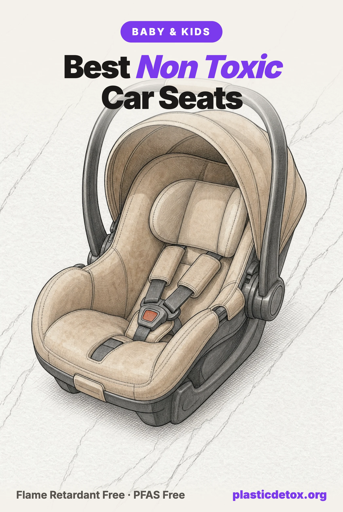

Best Non Toxic Car Seats: What Testing Found in the Fabric, the Foam and the Finish (2026)

The 30 Second Summary
- A parked car is a hot box, and flame retardant levels in cabin air rose about 12 percent with every degree Celsius in a study of 101 cars.
- Testing split cleanly. In the Ecology Center's 2022 round, all 12 conventional US seats carried flame retardants or high bromine in the upholstery, and all 10 seats sold flame retardant free were clean in fabric, crash foam and canopy.
- Read what the claim covers, and who checked it. Some makers cover the fabric and the foam, some only the cover, and no car seat brand holds a certificate that tests its finished fabric.
- No seat meets our standard yet. It asks the maker to state that the fabric and the foam carry no added flame retardants and that the seat is PFAS free, and for a certificate or an independent test from the last three years to back that up.
- The closest are the Chicco ClearTex seats and Clek's Mammoth. Both state the full claim. Neither can show a certificate number or a current test, and Clek's Mammoth is the only fabric with no polyester in it.
- Crash protection still comes first: rear facing as long as the seat allows, and no aftermarket covers or inserts, however natural.
Why the Car Seat Is Different
A car seat is the one baby product that sits in a hot box. After about an hour parked in Arizona sun, researchers measured a vehicle seat surface at 50.6°C (123°F), against 41.1°C for the same kind of car parked in shade. On a 72°F day, a closed sedan in another study reached 117°F inside, and cracking the windows made no significant difference.
Heat moves flame retardants into the air. A 2024 Duke University study of 101 cars found the flame retardant TCIPP in the cabin air of nearly every one, at a median about four times higher in summer than in winter, rising about 12 percent with every degree Celsius. It sampled the cars' own seats, not child seats, but it shows the route: warm upholstery, then the air a child breathes for the whole drive.
What Testing Found
The Ecology Center has tested car seats since 2006. In its 2018 study of 18 seats, only three rated low concern with no added flame retardants: the Clek Fllo in Mammoth wool, the Nuna Pipa Lite in Fog and the UPPAbaby MESA in Jordan. The Graco Contender 65 carried a phosphorus flame retardant at 40,500 ppm in its fabric and foam, and the polyurethane foam in the Chicco KeyFit 30 and the Nuna Pipa in Graphite held about 22,000 ppm.
Indiana University scientists analyzed the same 2018 seats in the lab. Flame retardants turned up at a median of 73.6 micrograms per gram for the most common type, and PBDEs, phased out years earlier, were in 75 percent of samples. A second paper found PFAS in 97 percent of 36 samples, higher in fabric than in foam, and short chain PFAS moved from the fabric into synthetic sweat.
The most recent round, the Ecology Center's 2022 Toxic Inequities report, took apart 22 US seats made in 2020 and 2021, and the split was clean. All 10 seats sold as flame retardant free had none in their upholstery, crash foam or canopy. All 12 that were not carried flame retardants or high bromine in the upholstery. The four likely PFAS results, 118 to 319 ppm of organic fluorine, were all conventional seats: Baby Trend Envy, Chicco KeyFit 30, Evenflo Nurture and Graco Verb.
The claim covers the fabric and foam, not every part. The same testing found bromine at 23,032 ppm in the seat pad elastic of a Maxi-Cosi Pria Max and a flame retardant in a label foam on a Britax Emblem. Clek's C-Zero Plus fabric, which Clek does not sell as flame retardant free, carried a phosphonate flame retardant. No lab has published car seat testing since.
| Study | What was tested | What it found |
|---|---|---|
| Ecology Center, 2018 | 18 US car seats | 15 with flame retardants; 3 rated low concern (Clek Fllo Mammoth, Nuna Pipa Lite Fog, UPPAbaby MESA Jordan) |
| Wu et al., Indiana University, 2019 and 2021 | The same 18 seats, lab analysis | Cyclic phosphonates the most common flame retardant; PBDEs in 75% of samples; PFAS in 97% of 36 samples |
| Ecology Center, 2022 | 22 US and 3 EU seats, 4 strollers | All 10 seats sold flame retardant free clean in fabric, crash foam and canopy; all 12 others flagged in upholstery; 4 likely PFAS, all conventional |
| Hoehn et al., Duke University, 2024 | Cabin air in 101 cars | TCIPP in 98 to 99% of cars; median about 4 times higher in summer |
Where the Chemicals Sit in a Car Seat
The fabric. This is where the choice is. Flame retardant finishes and PFAS stain treatments are applied to upholstery, and it is the layer a child's skin and breath touch. Brands that sell flame retardant free seats pass the federal fire test with merino wool, wool blends or tightly knit polyester, and the 2022 testing found every phosphorus flame retardant in upholstery.
The comfort foam. Soft polyurethane foam under the fabric is where the 2018 study found its highest flame retardant loads, about 22,000 ppm in two infant seats. A "flame retardant free fabric" claim does not always extend to it, so look for a claim that names the whole seat.
The crash foam. The rigid foam that absorbs impact is expanded polystyrene (EPS) or expanded polypropylene (EPP). Polystyrene foam in seven conventional US seats carried 2,487 to 4,456 ppm of bromine in 2022, a marker of brominated flame retardants, while the polystyrene in the Britax, Chicco, Maxi-Cosi and Nuna flame retardant free seats measured none. Polypropylene foam measured none in every seat. Bromine in the crash foam is a supplier choice, and flame retardant free seats avoided it.
The shell and harness. Every car seat is a plastic shell, usually polypropylene, with polyester harness webbing, and no plastic free version exists. That is the trade: the plastic is what protects a child in a crash. The plastics carry their own additives too: a 2023 analysis of the 2018 seats measured antioxidants at a median of 213 micrograms per gram in the foam.
What the Rules Cover, and What They Do Not
Car seats carry flame retardants because of one line in the federal crash standard. FMVSS 213 requires every material in a child seat to meet FMVSS 302, a 1971 vehicle interior test written for fires from matches and cigarettes that limits a horizontal burn to 102 mm per minute. Europe's car seat rule allows 30 mm per second, about 18 times faster, and the European seats in the 2022 testing had no phosphorus flame retardants.
Change is moving slowly. Consumer Reports, Green Science Policy and the International Association of Fire Fighters petitioned NHTSA in January 2025 to update the standard, and as of July 2026 the agency was still reviewing it. H.R. 8444, introduced in April 2026, would order a study of the chemicals used to comply, and has not moved since referral.
States have gone further on PFAS than on flame retardants. California has banned intentionally added PFAS in child restraint systems since July 2023, Minnesota since January 2025 and Maine since January 2026. Washington bans five named flame retardants in car seats, while California's flame retardant law exempts them. Regulation sets a floor, and the fabric and foam choices below are how you choose above it.
Reading a Flame Retardant Free Claim
Three questions separate the claims. Does it cover the foam as well as the fabric? Is there a written PFAS statement? Is there a certificate you can look up? GREENGUARD Gold, the certificate car seat brands cite most, is an emissions test: UL measures what the finished seat releases into the air, not whether a flame retardant or PFAS is in the material.
| Brand | What the claim covers | PFAS statement | Verified by a certificate or a current test | Main fabric |
|---|---|---|---|---|
| Chicco ClearTex | Fabric, foam, inserts and labels | No added PFAS in any car seat | No | Polyester knit |
| Clek | Fabric and the foam laminated to it | PFAS free and fluorine free | No, claim dropped in 2025 | Mammoth: 70% merino, 30% TENCEL. Others: polyester |
| Nuna | Fabric and foam, whole line | None found | No | Knit, fiber not published |
| UPPAbaby | Fabric; foam on Rove, Aria V2 and Mesa Max | None found | No | Polyester; Rove Greyson a merino blend |
| Orbit Baby | Fabric; the toddler seat's foam is qualified | None found | Claimed, no number | 65% merino, 35% polyester |
| Maxi-Cosi PureCosi | Fabric; padding on some models | None found | No | Recycled polyester |
| Britax | The cover | PFOS and PFOA only | No | Polyester |
| Cybex | Fabric | None found | No | Not published |
GREENGUARD Gold, which most of these brands hold, is an emissions test: UL measures what the finished seat releases into the air, not what is in the material. Searching OEKO-TEX's own database for every brand and parent company returned no Standard 100 certificate covering car seat textiles, and the claims that retailers repeat carry no certificate number to check.
Wondering about the seat already in your car? Type the brand into our free Product Check to see what we know about its materials, recalls and lawsuits.
The Big Brands at a Glance
Two things separate car seat brands in practice: whether the maker says its seat is made without added flame retardants, and how it behaves when something goes wrong. Fabric and foam are split into two columns because most claims cover only the cover you can see, while the foam underneath it is where a treatment is just as likely to sit. Recalls cover the last two years, to September 2026, from NHTSA's own file. No brand's claim has been verified by a certificate or a current independent test.
| Brand | Fabric free of added flame retardants? | Foam free of added flame retardants? | Recalls since September 2024 | What the maker did about it |
|---|---|---|---|---|
| Graco | No, apart from the GoMax infant seat's PureProtect fabric | No claim on any seat | 1. SnugRide Turn and Slide and Modes Nest, April 2026: the carrier can detach from its base | Replacement seats offered, letters mailed May 2026 |
| Chicco | Yes on ClearTex and on ClearLux. Regular fabric seats make no claim | Yes on ClearTex, which covers foam, inserts and labels. ClearLux covers the fabric only | 1. MyFit Zip Air harness booster, April 2025: too much chest movement in a crash | Free remedy kit, letters mailed July 2025 |
| Evenflo | Yes on the Green and Gentle fabric of seven products only | No claim | 8, the most of any brand, including the Revolve360 Slim headrest foam and the All4One recline | Mixed: a tape kit for the Slim, a replacement seat for the All4One, and two remedies still not shipped, the Reo and the LiteMax NXT, expected November 2026 |
| Safety 1st | No claim | No claim | 2. Harness booster height labels, 2025, and the Grow and Go Sprint headrest foam, 2025, covering 179,845 seats | New labels, and a replacement pad kit for the Sprint |
| Britax | Yes for the cover on most current seats. Its StayClean fabrics still use them | No claim | 2. One4Life Slim labels, November 2024, and the B Safe Gen 2 handle screw, August 2026, covering 114,660 seats | New labels for the first. The handle remedy is still being developed, with owner letters due by October 2026 |
| Maxi-Cosi | Yes for PureCosi fabric, on nearly every current seat | Yes for the padding on some models. Nothing stated for the rest | None. Its last two were in March 2023 | Not applicable |
| Nuna | Yes, every seat in the line | Yes, every seat in the line | 1. RAVA harness adjuster, November 2024, covering 608,786 seats | A cleaning kit, brush and new seat pad rather than a new adjuster. 11 percent completed in the only published report, and class actions continue |
| UPPAbaby | Yes, all fabrics across the line | Yes on the Rove, Aria V2 and Mesa Max. The Mesa V3 claim covers fabric only | None, and it has never filed a car seat recall | Not applicable |
| Clek | Yes, every current fabric | Yes for the foam laminated to the fabric, and it says its foam, harnesses and plastics test free of added flame retardants | None. Its four were in 2021 and 2022 | Free insert kits and replacements then, though completion was low: 5.4 percent on the largest |
| Doona | No. The maker says its materials do have flame retardants | No, under the same statement | None | Not applicable |
A recall is not automatically a mark against a brand: a maker that finds a fault and fixes it quickly is behaving well, and UPPAbaby's clean sheet and Evenflo's eight recalls are not the same kind of fact. What matters is the pattern and the fix. Three or more recalls in five years is our line for treating it as a brand problem, which is where Evenflo, Safety 1st and Cybex sit, and a remedy that cleans a part rather than replacing it, as on Nuna's RAVA, is worth knowing before you buy.
The Closest We Found
No car seat meets our standard yet. It asks three things: the maker states that the fabric and the foam carry no added flame retardants and that the seat is PFAS free; a certificate that tests the finished fabric, or an independent test from the last three years, backs that up; and the model carries no open recall or pending lawsuit. The seats below state the claim in the maker's own current words. None can show the proof, so we name what each is missing.
Crash protection comes first, every time
Keep a child rear facing as long as the seat allows, to its top height or weight limit, as the American Academy of Pediatrics recommends. Never add a cover, insert or padding the manufacturer did not make or approve, including organic or wool covers: NHTSA advises against them, and Britax's manual warns they could cause a seat to fail federal standards. Check the expiration date the maker sets, 6 to 10 years, and replace a seat after a moderate or severe crash.

Chicco Fit360 ClearTex Rotating Convertible
ClearTex fabric, foam, inserts and labels made without flame retardant treatments, and no added PFAS by policy. EPP crash foam, rotates 360 degrees. Unverified: no certificate and no current test.
View →
Clek Foonf Convertible, Mammoth
70% merino wool and 30% TENCEL over EPP foam and a steel and magnesium substructure. Fabric and laminated foam claimed flame retardant and PFAS free. Unverified, and four recalls in 2021 and 2022.
View →
Chicco KeyFit Max ClearTex Infant
ClearTex fabric, foam and labels made without flame retardant treatments, no added PFAS by policy. EPS lined shell and anti rebound bar, for babies to 32 inches. Unverified: no certificate or current test.
View →
Clek Liing Infant, Mammoth
70% merino wool and 30% TENCEL over an EPP lined shell, on a load leg base with rigid LATCH. 9 lb carrier. Same unverified claim as the Foonf, and the same recall record.
View →
Chicco OneFit LX ClearTex All in One
ClearTex fabric, foam and labels made without flame retardant treatments, no added PFAS by policy. Rear facing 5 to 40 lb, forward facing to 65 lb, booster to 100 lb. Unverified.
View →What Chicco proves, and what it does not
Chicco's claim is the broadest in the category. ClearTex covers the fabric, the foam, the inserts and the labels, its published policy says no Chicco car seat contains added PFAS, and UL lists the three seats above for GREENGUARD Gold. In the 2022 testing, a ClearTex KeyFit 35 bought at Target rated low concern with every minor part clean, the only flame retardant free seat in that study not donated by its maker.
What is missing is proof that somebody independent checked. Chicco holds no certificate testing the finished fabric, the screen it cites was one it commissioned, and the 2022 result is past our three year limit. Chicco also still sells regular fabric seats that make no claim at all, so choose ClearTex by name. Its newer ClearLux fabric is a merino blend that is 60 percent polyester, and its claim does not name the foam.
Clek, the only fabric with no polyester
Clek's Mammoth fabric is 70 percent merino wool and 30 percent TENCEL, and it is the only car seat fabric we found with no polyester in it. Clek states that its fabrics and the foam laminated to them carry no added flame retardants, and that its fabrics are PFAS free and fluorine free. The same fabric comes on the narrower Fllo and the Oobr booster.
Two things hold it back. Clek published an OEKO-TEX Standard 100 claim for Mammoth until 2025, then removed it, and publishes no certificate number, no current test and no word on whether its TENCEL is lyocell or modal. And Clek filed four NHTSA recalls between December 2021 and June 2022, for foam a child could pick loose, a canopy piece, peeling labels and a missing booster label, each with a free remedy. If you own a Foonf or Fllo made before May 21, 2021, order the free insert. Clek's own site lists 154 to 299 reviews per model.
The Picks Side by Side
| Seat | Stage | Fabric | Crash foam | Flame retardant free claim covers | Verified |
|---|---|---|---|---|---|
| Chicco Fit360 ClearTex | Convertible | Polyester knit | EPP | Fabric, foam, labels | No |
| Clek Foonf, Mammoth | Convertible | 70% merino, 30% TENCEL | EPP | Fabric and laminated foam | No |
| Chicco KeyFit Max ClearTex | Infant | Polyester knit | EPS | Fabric, foam, labels | No |
| Clek Liing, Mammoth | Infant | 70% merino, 30% TENCEL | EPP | Fabric and laminated foam | No |
| Chicco OneFit LX ClearTex | Birth to booster | Polyester knit | Not stated | Fabric, foam, labels | No |
Flame Retardant Free, With a Gap
These seats are sold free of added flame retardants too. Each is missing more than the two brands above.
Nuna, UPPAbaby, Maxi-Cosi, Britax, Cybex and Peg Perego
Nuna says every element of its seats, from fabric to foam, is made with no added fire retardant chemicals, and UL lists all 11 current models for GREENGUARD Gold, the most complete certificate record we found. Nuna publishes no fiber content for its knit fabrics, no PFAS statement and no certificate. Its RAVA convertible was recalled in November 2024 for a harness adjuster that can stop gripping, and consolidated class actions over it continue; the PIPA infant seats are not affected.
UPPAbaby says every fashion of its current seats uses fabric free of fire retardant chemicals, with the foam covered too on the Rove, the Aria V2 and the Mesa Max, though the newer Mesa V3 claim covers the fabric only. Its only merino seat, the Rove in Greyson, is listed by retailers as a polyester blend, and UPPAbaby publishes no percentages. It has no PFAS statement, and a class action alleging infants can slump chin to chest in the Mesa Max, Mesa V2 and Aria continues in California. UPPAbaby has never filed a car seat recall.
Maxi-Cosi makes PureCosi fabric and padding without added fire retardant treatment on seats such as the Pria All in One, its most reviewed seat. The fabric is recycled polyester, the brand makes no PFAS free statement and holds no certification, and in 2022 the seat pad elastic of a PureCosi Pria Max carried 23,032 ppm of bromine.
Britax sells covers made with no added flame retardant chemicals across most of its seats, including the One4Life and Poplar. The claim covers the cover only, the fabric is polyester, and its StayClean fabrics still use flame retardants. Its B Safe Gen 2 infant seats are under an August 2026 recall for a handle screw that can loosen, with the remedy still in development.
Cybex says all fabrics on eight US seats pass without added fire retardant chemicals, a fabric only claim with no fiber content or PFAS statement. UL lists three Cybex seats for GREENGUARD Gold, not the four others Cybex claims, and Cybex has filed three car seat recalls since 2022.
Peg Perego says its Primo Viaggio Nido infant seat is flame retardant free in both fabric and foam. The fabric is a polyester blend over polyurethane foam, and there is no PFAS statement or certificate. Its merino versions are no longer sold new in the US.
Orbit Baby sells its G5+ seats direct in a merino fabric that is 65 percent wool and 35 percent polyester. The flame retardant free claim covers the fabric, the toddler seat's foam is described only as free of harmful flame retardants, and the OEKO-TEX Standard 100 claim carries no certificate number. There is no PFAS statement.
Axkid's ONE 3 lists its fabric as flame retardant free, PFAS free and fully recycled without naming the fiber, and says nothing about its memory foam. Babyark's own law label puts its seat cover at 75 percent polyester fiber, and its claim covers the fabric only.
Brands We Did Not Pick
Graco, Baby Trend, Safety 1st and Cosco
Graco sells the most reviewed convertible seat we found, the Extend2Fit, and the Ecology Center found flame retardants in every Graco seat it tested in 2014, 2016, 2018 and 2022. The 2018 Contender 65 carried a phosphorus flame retardant at 40,500 ppm and a brominated one in its label, and the 2022 Extend2Fit's upholstery held up to 36,541 ppm of phosphorus. Graco makes no flame retardant free claim for the Extend2Fit or 4Ever DLX. Its GoMax infant seat uses flame retardant free fabric, a claim that does not mention the foam.
Baby Trend tested positive in every round too. Its 2018 EZ Flex Loc carried 56,907 ppm of phosphorus in the fabric, 4,810 ppm of bromine in the crash foam and a fluorine reading that suggests PFAS, and the brand makes no flame retardant free claim.
Safety 1st and Cosco, both Dorel brands, tested positive in 2016, 2018 and 2022, and neither sells a flame retardant free seat. Safety 1st has filed three car seat recalls since 2023, including 179,845 Grow and Go Sprint seats in 2025 for headrest foam a child could pick off and choke on.
Doona, Diono and Joie
Doona's car seat and stroller is the most reviewed travel system we found. Its safety FAQ says its materials meet every requirement and "do have flame retardants," and no independent lab has tested it.
Diono says its car seat fabrics contain flame retardants, though none brominated or chlorinated. When the Ecology Center tested its Rainier in 2016, the foam held 11,000 ppm of the flame retardant TPP.
Joie's FAQ answers whether its car seat covers contain flame retardants with "Yes, all US Joie car seat covers." Its US models include the Rue infant seat and the Chili Spin, both polyester.
Evenflo
Evenflo's Green and Gentle fabric, made from recycled bottles, is sold free from added chemicals and flame retardants on seven products, and the claim does not cover the polyurethane foam the same pages list. NHTSA records nine Evenflo car seat recalls since 2021, eight of them in 2025 and 2026, including two Green and Gentle models, and the Revolve180 LiteMax NXT's remedy was still expected in November 2026. Evenflo also agreed to a $3.5 million class settlement over its Big Kid booster's side impact marketing.
Free Habits That Lower the Dose
- Park in the shade or a garage. A seat parked in shade measured about 9°C cooler than one in sun, and cabin flame retardant levels rose about 12 percent per degree.
- Let fresh air in. The Duke authors suggest opening the windows and avoiding recirculated cabin air to lower exposure.
- Wash the cover the way the manual says, and never the harness. Manuals forbid machine washing or soaking straps because it weakens the webbing, and the AAP warns that disinfectants can reduce the seat's protection.
- Vacuum the seat and the car. Car dust in a 2025 study of 30 cars carried PFAS in every sample and a brominated flame retardant that had not declined in two decades of models.
- Do not buy a cover to fix an old seat. Replace the seat at its expiration date with a cleaner one instead.
Frequently Asked Questions
Why does no car seat rate good?
Because no maker can show the proof yet. A seat passes our materials check when the maker states that the fabric and the foam carry no added flame retardants and that the seat is PFAS free, and a certificate that tests the finished fabric, or an independent test from the last three years, backs it up. Chicco's ClearTex and Clek state the full claim, but no car seat brand or parent holds an OEKO-TEX Standard 100 certificate covering car seat textiles, and the newest independent car seat test was published in 2022. GREENGUARD Gold measures what a seat releases into the air, not what is in the fabric.
Are flame retardant free car seats as safe in a crash?
Yes, by the same measure as every other seat. Every car seat sold in the US must pass the same federal crash test, FMVSS 213, and the same flammability test, FMVSS 302, whether it passes the fire test with added chemicals or with wool and knit fabrics. The fabric does not change the crash requirements. Crash protection comes from the shell, the energy absorbing foam, the harness and correct installation, and a flame retardant free seat installed correctly and used rear facing as long as the seat allows is the safe choice.
Can I put a merino wool or organic cover on the car seat I already have?
No. NHTSA advises against aftermarket products unless the seat's manufacturer made or approved them, and the American Academy of Pediatrics says not to use extra products that did not come with the seat. Britax's manual warns that covers or inserts from another maker could cause the seat to fail federal safety standards. A thick cover can also change how the harness fits. If the seat's fabric worries you, buy a replacement cover from the same manufacturer, or choose a flame retardant free seat when this one expires.
Do car seats expire?
Yes, but the date comes from the manufacturer, not from federal law. FMVSS 213 only requires a label stating the month and year the seat was made. Makers then set a useful life, typically 6 to 10 years: Chicco sets 6 years for the KeyFit 35 and 8 for the Fit360, UPPAbaby 7 for the Mesa V3, Britax 9 for the Pinnacle, Clek 9 for every seat, and Graco and Nuna 10 for the 4Ever DLX and RAVA. The date is printed on a label on the seat and in the manual.
Are PFAS banned in car seats?
In some states. California has banned intentionally added PFAS, or total organic fluorine of 100 ppm or more, in child restraint systems since July 1, 2023. Minnesota's ban on intentionally added PFAS in juvenile products, which names child restraint systems, took effect in January 2025, and Maine's took effect in January 2026 and still reaches seat fabric. There is no federal PFAS limit for car seats, and seats sold before those dates may still be in circulation.
Why do car seats have flame retardants when strollers do not?
Car seats are motor vehicle equipment. The federal crash standard, FMVSS 213, requires every material in a child seat to meet the vehicle interior flammability test, FMVSS 302, and strollers carry no such requirement. In the Ecology Center's 2022 testing, none of the four strollers had bromine or phosphorus flame retardants, even where the matching car seat's fabric did. Many brands still meet the car seat test with chemical treatments, while others use wool or knit fabrics.
Is the EPS foam in a car seat a concern?
Only in seats that are not flame retardant free. In the Ecology Center's 2022 testing, the polystyrene crash foam in seven conventional US seats carried 2,487 to 4,456 ppm of bromine, a marker of brominated flame retardants, while the polystyrene foam in four flame retardant free seats measured none, and polypropylene foam measured none in any seat. The specific chemical was not identified. The foam does the essential job of absorbing crash energy, so choose a seat sold flame retardant free rather than choosing by foam type.
Related Articles
- Non Toxic Baby and Toddler Products Guide
The full product by product guide, from bottles to the car seat. - Best Non Toxic Crib Mattresses
The same flame retardant story in the nursery, and the organic mattresses that pass. - Baby and Kids 101
The step by step detox for families, ranked by impact. - Top 100 Baby and Kids Products on Amazon, Rated
Popular baby gear, car seats included, with a verdict on each. - Microplastics in Indoor Air
What sheds into the air your family breathes. - What Are PFAS?
The forever chemicals behind stain and water resistant finishes.